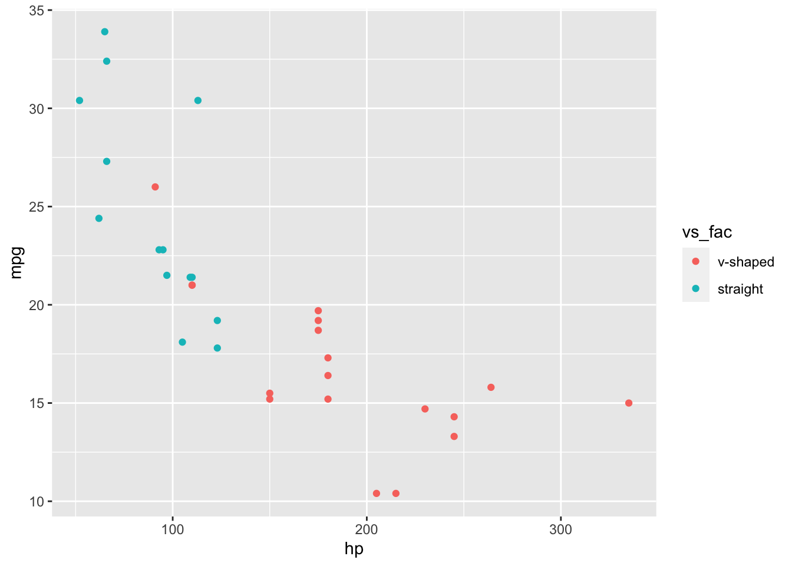

library(brms)
library(MASS)
library(tidyverse)
library(psych)Bayesian Workflow with mtcars
Setup
package used:
data used:
data(mtcars)
#mtcars$am_fac <- factor(mtcars$am, labels = c("automatic", "manual"))
mtcars$vs_fac <- factor(mtcars$vs, labels = c("v-shaped", "straight"))describe(mtcars, fast = TRUE)Warning in FUN(newX[, i], ...): no non-missing arguments to min; returning InfWarning in FUN(newX[, i], ...): no non-missing arguments to max; returning -Inf vars n mean sd min max range se
mpg 1 32 20.09 6.03 10.40 33.90 23.50 1.07
cyl 2 32 6.19 1.79 4.00 8.00 4.00 0.32
disp 3 32 230.72 123.94 71.10 472.00 400.90 21.91
hp 4 32 146.69 68.56 52.00 335.00 283.00 12.12
drat 5 32 3.60 0.53 2.76 4.93 2.17 0.09
wt 6 32 3.22 0.98 1.51 5.42 3.91 0.17
qsec 7 32 17.85 1.79 14.50 22.90 8.40 0.32
vs 8 32 0.44 0.50 0.00 1.00 1.00 0.09
am 9 32 0.41 0.50 0.00 1.00 1.00 0.09
gear 10 32 3.69 0.74 3.00 5.00 2.00 0.13
carb 11 32 2.81 1.62 1.00 8.00 7.00 0.29
vs_fac 12 32 NaN NA Inf -Inf -Inf NAggplot(mtcars, aes(x = hp, y = mpg, color = vs_fac)) + geom_point()
priors <- c(set_prior("normal(0, 20)", class = "Intercept"),
set_prior("normal(0,20)", class = "b", coef = "hp"),
set_prior("normal(0, 20)", class = "b", coef = "vs"),
set_prior("normal(0, 20)", class = "b", coef = "hp:vs"),
#set_prior("normal(0,1)", class = "sd"),
set_prior("normal(0,10)", class = "sigma"))modx <- bf(mpg ~ hp*vs)
simdat_prior <- brm(modx, data = mtcars, prior = priors, sample_prior = "only", silent = 0)Running /Library/Frameworks/R.framework/Resources/bin/R CMD SHLIB foo.c
using C compiler: ‘Apple clang version 14.0.3 (clang-1403.0.22.14.1)’
using SDK: ‘’
clang -arch x86_64 -I"/Library/Frameworks/R.framework/Resources/include" -DNDEBUG -I"/Library/Frameworks/R.framework/Versions/4.3-x86_64/Resources/library/Rcpp/include/" -I"/Library/Frameworks/R.framework/Versions/4.3-x86_64/Resources/library/RcppEigen/include/" -I"/Library/Frameworks/R.framework/Versions/4.3-x86_64/Resources/library/RcppEigen/include/unsupported" -I"/Library/Frameworks/R.framework/Versions/4.3-x86_64/Resources/library/BH/include" -I"/Library/Frameworks/R.framework/Versions/4.3-x86_64/Resources/library/StanHeaders/include/src/" -I"/Library/Frameworks/R.framework/Versions/4.3-x86_64/Resources/library/StanHeaders/include/" -I"/Library/Frameworks/R.framework/Versions/4.3-x86_64/Resources/library/RcppParallel/include/" -I"/Library/Frameworks/R.framework/Versions/4.3-x86_64/Resources/library/rstan/include" -DEIGEN_NO_DEBUG -DBOOST_DISABLE_ASSERTS -DBOOST_PENDING_INTEGER_LOG2_HPP -DSTAN_THREADS -DBOOST_NO_AUTO_PTR -include '/Library/Frameworks/R.framework/Versions/4.3-x86_64/Resources/library/StanHeaders/include/stan/math/prim/fun/Eigen.hpp' -D_REENTRANT -DRCPP_PARALLEL_USE_TBB=1 -I/opt/R/x86_64/include -fPIC -falign-functions=64 -Wall -g -O2 -c foo.c -o foo.o
In file included from <built-in>:1:
In file included from /Library/Frameworks/R.framework/Versions/4.3-x86_64/Resources/library/StanHeaders/include/stan/math/prim/fun/Eigen.hpp:22:
In file included from /Library/Frameworks/R.framework/Versions/4.3-x86_64/Resources/library/RcppEigen/include/Eigen/Dense:1:
In file included from /Library/Frameworks/R.framework/Versions/4.3-x86_64/Resources/library/RcppEigen/include/Eigen/Core:88:
/Library/Frameworks/R.framework/Versions/4.3-x86_64/Resources/library/RcppEigen/include/Eigen/src/Core/util/Macros.h:628:1: error: unknown type name 'namespace'
namespace Eigen {
^
/Library/Frameworks/R.framework/Versions/4.3-x86_64/Resources/library/RcppEigen/include/Eigen/src/Core/util/Macros.h:628:16: error: expected ';' after top level declarator
namespace Eigen {
^
;
In file included from <built-in>:1:
In file included from /Library/Frameworks/R.framework/Versions/4.3-x86_64/Resources/library/StanHeaders/include/stan/math/prim/fun/Eigen.hpp:22:
In file included from /Library/Frameworks/R.framework/Versions/4.3-x86_64/Resources/library/RcppEigen/include/Eigen/Dense:1:
/Library/Frameworks/R.framework/Versions/4.3-x86_64/Resources/library/RcppEigen/include/Eigen/Core:96:10: fatal error: 'complex' file not found
#include <complex>
^~~~~~~~~
3 errors generated.
make: *** [foo.o] Error 1
SAMPLING FOR MODEL '3a98f36cf2239f8a183d4b55542d06f0' NOW (CHAIN 1).
Chain 1:
Chain 1: Gradient evaluation took 2e-05 seconds
Chain 1: 1000 transitions using 10 leapfrog steps per transition would take 0.2 seconds.
Chain 1: Adjust your expectations accordingly!
Chain 1:
Chain 1:
Chain 1: Iteration: 1 / 2000 [ 0%] (Warmup)
Chain 1: Iteration: 200 / 2000 [ 10%] (Warmup)
Chain 1: Iteration: 400 / 2000 [ 20%] (Warmup)
Chain 1: Iteration: 600 / 2000 [ 30%] (Warmup)
Chain 1: Iteration: 800 / 2000 [ 40%] (Warmup)
Chain 1: Iteration: 1000 / 2000 [ 50%] (Warmup)
Chain 1: Iteration: 1001 / 2000 [ 50%] (Sampling)
Chain 1: Iteration: 1200 / 2000 [ 60%] (Sampling)
Chain 1: Iteration: 1400 / 2000 [ 70%] (Sampling)
Chain 1: Iteration: 1600 / 2000 [ 80%] (Sampling)
Chain 1: Iteration: 1800 / 2000 [ 90%] (Sampling)
Chain 1: Iteration: 2000 / 2000 [100%] (Sampling)
Chain 1:
Chain 1: Elapsed Time: 0.044234 seconds (Warm-up)
Chain 1: 0.023207 seconds (Sampling)
Chain 1: 0.067441 seconds (Total)
Chain 1:
SAMPLING FOR MODEL '3a98f36cf2239f8a183d4b55542d06f0' NOW (CHAIN 2).
Chain 2:
Chain 2: Gradient evaluation took 4e-06 seconds
Chain 2: 1000 transitions using 10 leapfrog steps per transition would take 0.04 seconds.
Chain 2: Adjust your expectations accordingly!
Chain 2:
Chain 2:
Chain 2: Iteration: 1 / 2000 [ 0%] (Warmup)
Chain 2: Iteration: 200 / 2000 [ 10%] (Warmup)
Chain 2: Iteration: 400 / 2000 [ 20%] (Warmup)
Chain 2: Iteration: 600 / 2000 [ 30%] (Warmup)
Chain 2: Iteration: 800 / 2000 [ 40%] (Warmup)
Chain 2: Iteration: 1000 / 2000 [ 50%] (Warmup)
Chain 2: Iteration: 1001 / 2000 [ 50%] (Sampling)
Chain 2: Iteration: 1200 / 2000 [ 60%] (Sampling)
Chain 2: Iteration: 1400 / 2000 [ 70%] (Sampling)
Chain 2: Iteration: 1600 / 2000 [ 80%] (Sampling)
Chain 2: Iteration: 1800 / 2000 [ 90%] (Sampling)
Chain 2: Iteration: 2000 / 2000 [100%] (Sampling)
Chain 2:
Chain 2: Elapsed Time: 0.050554 seconds (Warm-up)
Chain 2: 0.016642 seconds (Sampling)
Chain 2: 0.067196 seconds (Total)
Chain 2:
SAMPLING FOR MODEL '3a98f36cf2239f8a183d4b55542d06f0' NOW (CHAIN 3).
Chain 3:
Chain 3: Gradient evaluation took 4e-06 seconds
Chain 3: 1000 transitions using 10 leapfrog steps per transition would take 0.04 seconds.
Chain 3: Adjust your expectations accordingly!
Chain 3:
Chain 3:
Chain 3: Iteration: 1 / 2000 [ 0%] (Warmup)
Chain 3: Iteration: 200 / 2000 [ 10%] (Warmup)
Chain 3: Iteration: 400 / 2000 [ 20%] (Warmup)
Chain 3: Iteration: 600 / 2000 [ 30%] (Warmup)
Chain 3: Iteration: 800 / 2000 [ 40%] (Warmup)
Chain 3: Iteration: 1000 / 2000 [ 50%] (Warmup)
Chain 3: Iteration: 1001 / 2000 [ 50%] (Sampling)
Chain 3: Iteration: 1200 / 2000 [ 60%] (Sampling)
Chain 3: Iteration: 1400 / 2000 [ 70%] (Sampling)
Chain 3: Iteration: 1600 / 2000 [ 80%] (Sampling)
Chain 3: Iteration: 1800 / 2000 [ 90%] (Sampling)
Chain 3: Iteration: 2000 / 2000 [100%] (Sampling)
Chain 3:
Chain 3: Elapsed Time: 0.046203 seconds (Warm-up)
Chain 3: 0.01794 seconds (Sampling)
Chain 3: 0.064143 seconds (Total)
Chain 3:
SAMPLING FOR MODEL '3a98f36cf2239f8a183d4b55542d06f0' NOW (CHAIN 4).
Chain 4:
Chain 4: Gradient evaluation took 7e-06 seconds
Chain 4: 1000 transitions using 10 leapfrog steps per transition would take 0.07 seconds.
Chain 4: Adjust your expectations accordingly!
Chain 4:
Chain 4:
Chain 4: Iteration: 1 / 2000 [ 0%] (Warmup)
Chain 4: Iteration: 200 / 2000 [ 10%] (Warmup)
Chain 4: Iteration: 400 / 2000 [ 20%] (Warmup)
Chain 4: Iteration: 600 / 2000 [ 30%] (Warmup)
Chain 4: Iteration: 800 / 2000 [ 40%] (Warmup)
Chain 4: Iteration: 1000 / 2000 [ 50%] (Warmup)
Chain 4: Iteration: 1001 / 2000 [ 50%] (Sampling)
Chain 4: Iteration: 1200 / 2000 [ 60%] (Sampling)
Chain 4: Iteration: 1400 / 2000 [ 70%] (Sampling)
Chain 4: Iteration: 1600 / 2000 [ 80%] (Sampling)
Chain 4: Iteration: 1800 / 2000 [ 90%] (Sampling)
Chain 4: Iteration: 2000 / 2000 [100%] (Sampling)
Chain 4:
Chain 4: Elapsed Time: 0.041936 seconds (Warm-up)
Chain 4: 0.022409 seconds (Sampling)
Chain 4: 0.064345 seconds (Total)
Chain 4: